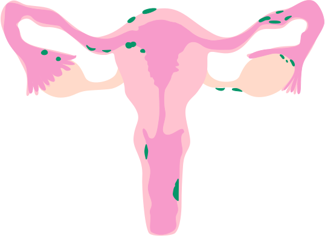
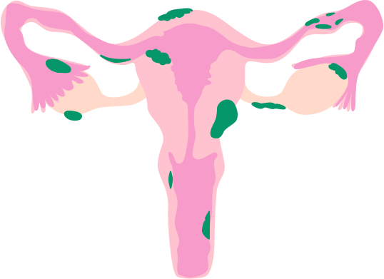
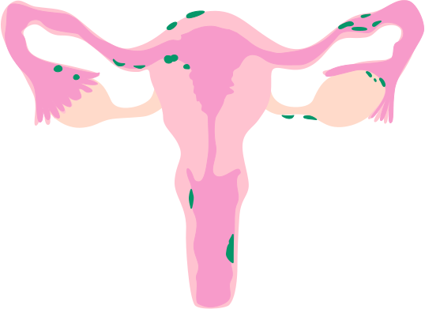
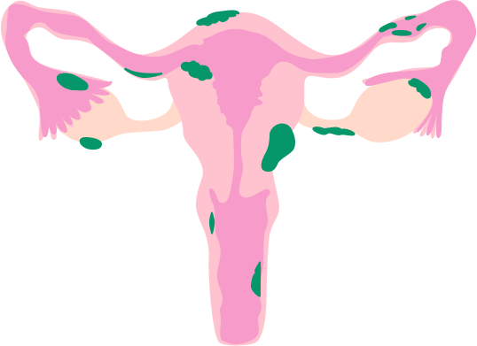

Words are powerful. They can comfort, inspire, or unintentionally hurt. For women living with endometriosis, respectful and compassionate communication can provide a sense of comfort and belonging.
It is not about saying the perfect thing but about showing that we care and are willing to understand their journey.
Do
Use respectful and accurate terms
Refer to endometriosis as a 'condition', not a 'disease' to avoid negative connotations.
Living with this condition must require a lot of resilience.
Don't
Do not dismiss their pain
Downplaying their experience invalidates their reality.
Avoid saying 'Everyone has bad periods - it's normal.'
Do
Validate feelings and experiences
Acknowledge the challenges they face with empathy.
Going through this sounds challenging, and I admire your strength.
Don't
Do not imply they are overreacting
It suggests they are exaggerating, which can feel dismissive.
Avoid saying 'Are you sure it's that serious?'
Do
Respect their boundaries
Encourage open communication while respecting privacy.
Let me know if there's anything you feel comfortable sharing about your condition.
Don't
Do not push solutions
It can come across as trivializing a serious condition.
Avoid saying 'Have you tried yoga or herbal remedies?'
Do
Educate yourself
Demonstrate initiative to learn and be supportive.
I've read about endometriosis. I'd like to understand more about how it affects you, if you are comfortable sharing.
Don't
Do not be overly pitying
It can feel patronizing and diminish their sense of agency.
Avoid saying 'I feel so sorry for you - it must be terrible.'
Do
Offer practical help
Show care and compassion for the person.
Can I help you with anything? Just let me know.
Don't
Do not blame them for their condition
It places unnecessary guilt and responsibility on them.
Avoid saying 'Maybe if you exercised more, it would get better.'
 


